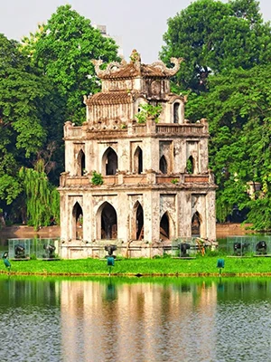

Vé máy bay Nha Trang đi Lạng Sơn hôm nay
Từ phố biển Nha Trang đầy nắng đến miền biên viễn Lạng Sơn, chuyến đi như một hành trình ngược hướng gió: rời vị mặn của đại dương để chạm vào vị lạnh của rừng núi. Ở hai đầu đất nước, một bên là sóng vỗ rì rào, bên kia là những dãy núi điệp điệp trùng trùng bao quanh phố núi yên bình. Hành khách sẽ được trải nghiệm sự thay đổi thú vị của khí hậu, cảnh quan và cả nhịp sống con người. Lạng Sơn chào đón bạn bằng những phiên chợ vùng cao rực rỡ sắc màu, những món đặc sản như vịt quay, phở chua, và những điểm đến nổi tiếng như động Tam Thanh, núi Tô Thị hay cửa khẩu Hữu Nghị sầm uất. Đây chắc chắn sẽ là hành trình mang đến cho bạn cảm giác mới lạ, vừa hoang sơ vừa gần gũi, kết nối hai miền đất đầy khác biệt mà quyến rũ, khiến chuyến bay Nha Trang – Lạng Sơn trở thành lựa chọn tuyệt vời cho những ai yêu thích khám phá và muốn cảm nhận trọn vẹn vẻ đẹp đa sắc của Việt Nam.
Vé máy bay Nha Trang đi Cao Bằng cập nhật giá mới nhất
Có lẽ ai từng sống giữa nắng gió miền biển đều đôi lần mơ về một nơi thật khác, nơi có sương giăng khắp lối, suối chảy dưới chân núi và rừng xanh thẳm đến tận chân trời. Từ Nha Trang, hành trình đến Cao Bằng là chuyến đi như thế: một cuộc rời xa nơi biển xanh thành phố rực nắng để tìm về với miền non cao yên bình, nơi thời gian chầm chậm hơn và thiên nhiên như đang khẽ thì thầm. Trên đường đến Cao Bằng, bạn sẽ qua những con đèo mẹp, những thung lũng ngập tràn sắc hoa dại và sông suối hiền hòa chảy bên đường. Đến nơi, bạn sẽ được khám phá vẻ đẹp hùng vĩ của thác Bản Giốc, cảm nhận làn sương mỏng buổi bình minh phủ xuống bản làng, và thưởng thức món thắng cố nồng ấm, món cá suối ngọt lành. Hãy để hành trình từ Nha Trang đến Cao Bằng trở thành điểm khởi đầu cho những ký ức khám phá miền đất mới đầy mê hoặc.
Vé máy bay Nha Trang Đà Lạt cập nhật mới nhất
Có những hành trình ngắn thôi mà lại khiến người ta nhớ mãi, như chuyến đi từ Nha Trang đến Đà Lạt. Một bên là nắng vàng, biển xanh; bên kia là sương mù, rừng thông. Sự đối lập chỉ trong vài tiếng di chuyển khiến người ta có cảm giác như vừa đổi cả không gian lẫn cảm giác — từ ánh nắng chói chang và những con sóng rì rào của một thành phố biển, bạn lạc vào không khí se lạnh của cao nguyên, nơi sương mù khẽ tan trước mặt và rừng thông thì thầm bên tai. Trên hành trình từ Nha Trang đến Đà Lạt, bạn sẽ đi qua những con đèo uốn lượn, những thung lũng xanh thẳm và hồ nước yên bình như một món quà thiên nhiên dành riêng cho người yêu khám phá. Khi đặt chân đến Đà Lạt, bạn sẽ được đón nhận bởi không khí trong lành, hoa nở quanh năm và những quán cà phê ẩn mình trong rừng thông — một sự tĩnh lặng đầy mê hoặc so với nhịp sống sôi động của biển cả. Đây chính là chuyến đi ngắn nhưng đầy đủ cảm xúc, khởi đầu từ biển xanh, kết thúc ở cao nguyên mộng mơ, khiến lòng người nhớ mãi không thôi.
Vé máy bay Sài Gòn Cao Bằng cập nhật hôm nay
Nếu bạn từng mơ về một vùng đất nơi núi chạm mây, sông ôm lấy núi, và con người sống hiền hòa như gió, thì Cao Bằng chính là lời đáp cho giấc mơ ấy. Nằm ở phía Đông Bắc xa xôi, Cao Bằng khiến người ta say lòng không chỉ bởi cảnh sắc hùng vĩ trải dài qua từng rặng núi đá vôi, những dòng suối trong như gương soi dưới tán rừng nguyên sinh mà còn bởi nhịp sống của đồng bào dân tộc nơi đây – tĩnh lặng mà đầy ấm áp. Khi bước chân vào đất Cao Bằng, bạn sẽ cảm nhận được hơi thở của thiên nhiên chưa kịp sửa soạn cho khách, của những sớm sương khẽ phủ bản làng, của tiếng nước đổ nhẹ ở thác Bản Giốc nơi biên ải và của gió núi mang mùi thông và đất đỏ đá vôi. Hành trình từ Sài Gòn tới đây không chỉ là di chuyển địa lý mà là hành trình trở về với bản nguyên, là cơ hội để bạn tách khỏi bộn bề và lắng nghe tiếng thì thầm của núi rừng, để dịu đi và làm mới mình trong không gian nơi có sương thấp, rừng sâu và những con người hiền lành như đất. Hãy đặt vé ngay hôm nay để mở ra một chuyến đi thiên nhiên và tâm hồn – vì ở Cao Bằng, mỗi khoảnh khắc đều có thể trở thành ký ức không phai.
Vé máy bay Sài Gòn Bắc Ninh mới nhất
Có những nơi khiến người ta chẳng cần lý do gì nhiều, chỉ cần nhắc đến tên thôi là đã muốn xách ba lô lên đường. Bắc Ninh là một nơi như thế, nhỏ bé, yên bình mà duyên dáng đến lạ. Nơi tiếng hát quan họ vẫn vang trên bến sông Cầu, nơi những làng nghề truyền thống vẫn đỏ lửa qua bao thế hệ, và những mái đình, mái chùa rêu phong kể chuyện về một vùng đất trăm năm văn hiến. Hành trình từ Sài Gòn đến Bắc Ninh không chỉ là chuyến đi giữa hai miền Nam – Bắc, mà còn là hành trình trở về với cội nguồn văn hóa dân tộc. Ở đây, bạn có thể thong dong dạo quanh những con đường làng rợp bóng tre, ghé thăm chùa Dâu – ngôi chùa cổ nhất Việt Nam, hay hòa mình vào không gian lễ hội đậm đà bản sắc mỗi độ xuân về. Bắc Ninh không ồn ào, không vội vã, mà nhẹ nhàng, sâu lắng như chính câu hát quan họ ngọt ngào níu bước chân người lữ khách. Một chuyến bay ngắn từ Sài Gòn sẽ đưa bạn đến miền quê yên ả ấy, nơi quá khứ và hiện tại giao hòa trong từng nụ cười thân thiện và lời ca mộc mạc, khiến bất cứ ai đặt chân tới cũng thấy lòng mình bình yên đến lạ.